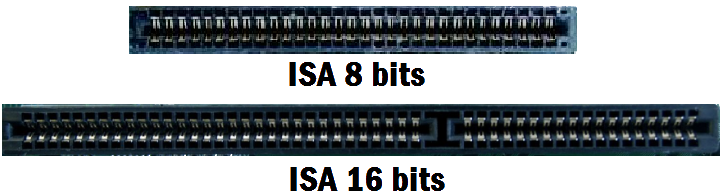
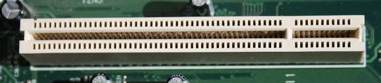
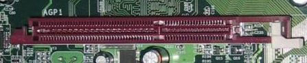

Conectores Isa
Fueron un tipo de conector utilizado para tarjetas de expansion, por ejemplo Creative Soundblaster para sonido.
Se mantuvo compatibilidad en los mothers hasta la era del Pentium III.
Salieron 3 versiones de este puerto: 8 Bits, 16 Bits y 32 Bits(tambien llamado puerto Vesa)

Conectores PCI
Salieron como una alternativa de mayor velocidad al puerto isa. Su uso se estandarizo entre principios y mediados de los 90s
ademas de ser mucho mas veloces que los puertos isa eran de menor tamaño

Conectores AGP
Se crearon especificamente para comunicar las aceleradoras graficas con el procesador de una manera directa.
El puerto pci comenzo a ser insuficiente para las aceleradoras 3d por lo que se devio realizar una revision del mismo
Entre sus principales cualidades esta el uso de un bus separado para la comunicacion con el CPU y una mayor capacidad de alimentacion
